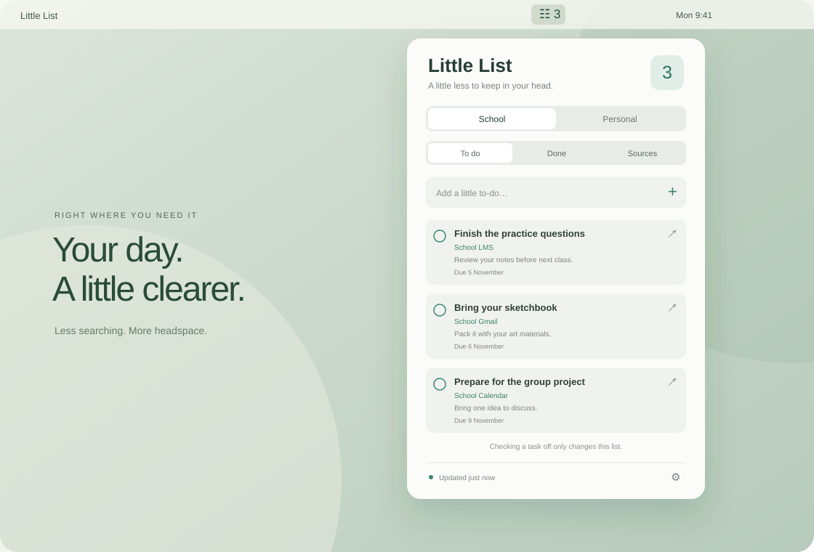
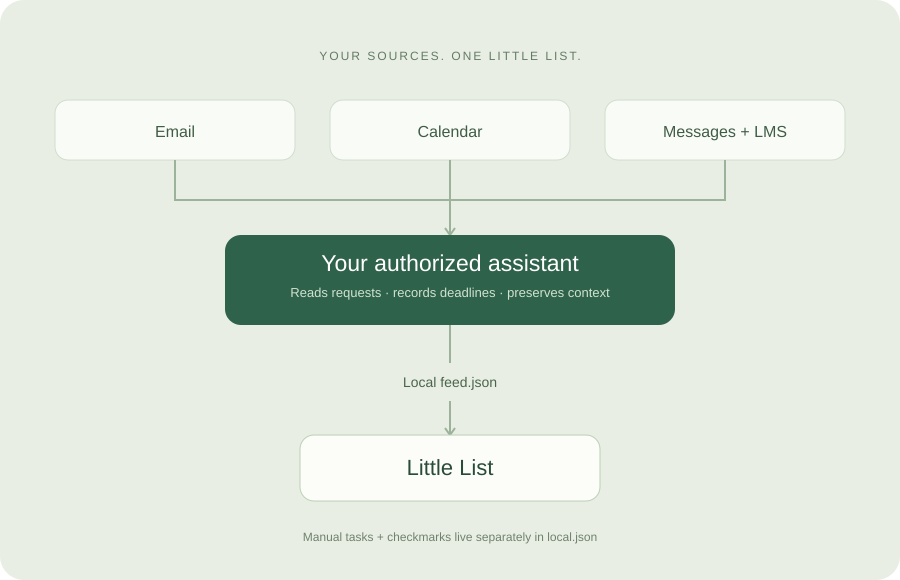

Two lists. One small home.
Keep School and Personal apart. Add your own tasks alongside the ones your assistant finds.
SMALL APP. A LITTLE MORE SPACE.
The things you need to do, together at last.
School and personal tasks, quietly at home in your Mac’s menu bar.
macOS 14+ · Native app · AI-assisted setup

LESS SCATTERED. MORE SETTLED.
A request in a message. An assignment on your school portal. Something you promised yourself you’d remember. Little List gives those loose ends a place to live.
Keep School and Personal apart. Add your own tasks alongside the ones your assistant finds.
Open the message or assignment behind a task. Keep its context one click away.
Finish a task or restore it from Done. Your checkmarks only change your list.
A SIMPLE DIVISION OF LABOUR
An authorized AI assistant reads your chosen sources and updates a local feed. The Mac app reads that file and shows your tasks.
Gmail, Calendar, Chat, WhatsApp and your school LMS can be included when your assistant has the right tools and access.
Read the complete setup guide
The app doesn’t run an AI or log into your accounts. Scheduled checks depend on your assistant being available; checks through apps need an unlocked Mac. Sources shows what was checked and when. Refreshes are periodic, and account processing depends on the services you choose.
BRING YOUR OWN ASSISTANT
Download the self-contained guide and attach it to your AI assistant. It includes the app source, installation steps and refresh instructions. Ask it to check its capabilities before getting started.
Download the setup guideNo local tools? The guide includes manual setup steps, too.